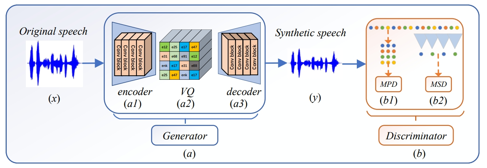
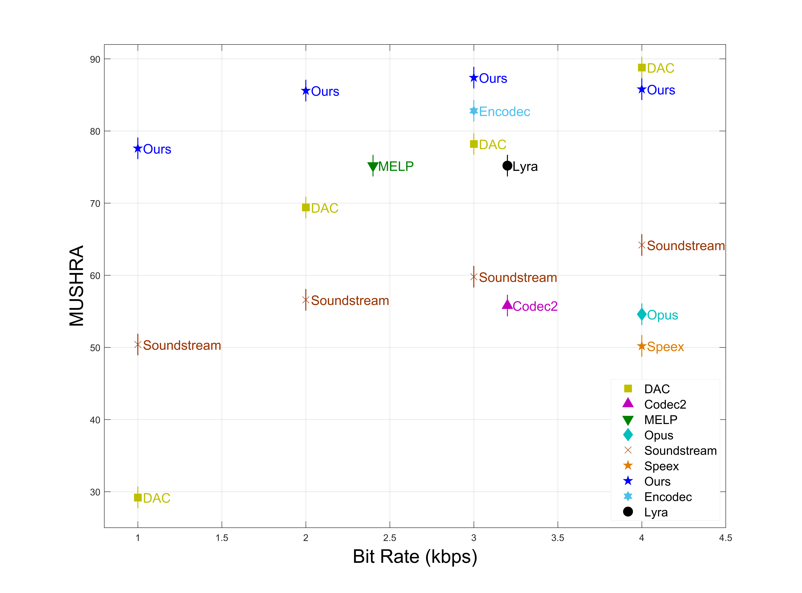

SVCODEC:
A STREAMING VARIABLE NEURAL SPEECH CODEC
Huaifeng Zhang 1, Peifei Wu1, Guigeng Li1, Yuan An1, Hao Zhang1*,
1College of Electronic Engineerin, Ocean University of China, QingDao, 266100, China
Abstract.
Speech coding is of crucial importance in saving precious transmission and storage resources and significantly enhancing communication efficacy. Currently, it is evolving towards ultra-low bit rates, which imposes heightened demands on coding efficiency, communication delay, and speech quality.
This paper presents a variable bit rate streaming neural speech codec designed for ultra-low bit rate scenarios, based on the SoundStream network framework. The codec employs the vector quantised variational auto-encoder (VQ-VAE) algorithm to capture the temporal structure and spectral characteristics of audio datasets. This process generates a latent space codebook that is strongly correlated with the feature matrix of the target signal and facilitates the mapping of feature vectors to discrete feature vectors in the latent space for low bit rate speech compression.
During the joint quantization training of multiple latent space codebooks using residual vector quantizers (RVQ), a balanced training strategy is introduced to ensure the balanced weight of the codebook, facilitating variable bit implementation in the inference process. Considering the harmonic characteristics of speech signals, a multi-period discriminator and a multi-scale discriminator are utilized to overcome the limitations of single-scale discriminators. The short-time fourier transform (STFT) spectrum, which has the ability to provide more accurate time-frequency resolution, is employed to reconstruct the reconstruction loss function. Additionally, a codebook loss function is introduced to improve the utilization rate of the codebook and accelerate the convergence speed of the model.
Objective and subjective experiments demonstrate that our proposed new neural speech codec outperforms traditional classical speech codecs and existing neural speech codecs in terms of reconstructed speech naturalness and quality while maintaining the low latency characteristic of neural speech codecs. With a multi-stimulus test with hidden reference and anchor (MUSHRA) score of 87, it is highly suitable for ultra-low bit rate speech compression applications such as satellite voice communication and narrowband instant messaging. The demo has been publicly released at \href{https://svcodec.github.io/}{https://svcodec.github.io/}.
This page is for research demonstration purposes only.
Overview

SVCODEC Model Architecture.
Part I:The generator (a) of the GAN network which consists of encoder (a1), vector quantizer (a2) and decoder (a3) and used to generate synthesized speech (y) which will be input to the discriminator (b) of the GAN network. Part II: The efficient discriminator (b), consisting of a multi-period discriminator (b1) and a multi-scale discriminator (b2).
Experimental Results

Subjective evaluation results.
When the bit rate is the same or similar, SVCODEC holds an absolute advantage in MUSHRA score
Experimental Results
Objective evaluation results: ViSQOL(a) PESQ(b) DNSMOS(c) STOI(d).
In the same code rate range, SVCODEC has higher ViSQOL scores. Within a similar ViSQOL score range, SVCODEC also has a lower code rate. In other words, SVCODEC has absolute advantages in terms of bit rate and output voice quality.
Experimental Results
SVCODEC VS Multiple Codecs with Low Bit Rate.
In the same code rate range, SVCODEC has higher ViSQOL scores. Within a similar ViSQOL score range, SVCODEC also has a lower code rate. In other words, SVCODEC has absolute advantages in terms of bit rate and output voice quality.
Original Input Speech from LibriSpeech
| Label | Gender | Speaker | Text | Speech |
|---|---|---|---|---|
| Sample1 | Male | Paul-Gabriel Wiener | HE BEGAN A CONFUSED COMPLAINT AGAINST THE WIZARD WHO HAD VANISHED BEHIND THE CURTAIN ON THE LEFT | |
| Sample2 | Male | Brad Bush | SATURDAY AUGUST FIFTEENTH THE SEA UNBROKEN ALL ROUND NO LAND IN SIGHT | |
| Sample3 | Male | Taylor Burton-Edward | OUT IN THE WOODS STOOD A NICE LITTLE FIR TREE | |
| Sample4 | Female | Nikolle Doolin | ALSO A POPULAR CONTRIVANCE WHEREBY LOVE MAKING MAY BE SUSPENDED BUT NOT STOPPED DURING THE PICNIC SEASON | |
| Sample5 | Female | Rachelellen | SOMEHOW OF ALL THE DAYS WHEN THE HOME FEELING WAS THE STRONGEST THIS DAY IT SEEMED AS IF SHE COULD BEAR IT NO LONGER |
Output Speech of SVCODEC (Ours)
| Bitrate | Sample1 | Sample2 | Sample3 | Sample4 | Sample5 |
|---|---|---|---|---|---|
| 0.5kbps | |||||
| 1kbps | |||||
| 1.5kbps | |||||
| 2kbps | |||||
| 2.5kbps | |||||
| 3kbps | |||||
| 3.5kbps | |||||
| 4kbps |
Output Speech of SoundStream
| Bitrate | Sample1 | Sample2 | Sample3 | Sample4 | Sample5 |
|---|---|---|---|---|---|
| 0.5kbps | |||||
| 1kbps | |||||
| 1.5kbps | |||||
| 2kbps | |||||
| 2.5kbps | |||||
| 3kbps | |||||
| 3.5kbps | |||||
| 4kbps |
Output Speech of Codec2
| Bitrate | Sample1 | Sample2 | Sample3 | Sample4 | Sample5 |
|---|---|---|---|---|---|
| 0.7kbps | |||||
| 1.2kbps | |||||
| 1.6kbps | |||||
| 2.4kbps | |||||
| 3.2kbps |
Output Speech of MELP
| Bitrate | Sample1 | Sample2 | Sample3 | Sample4 | Sample5 |
|---|---|---|---|---|---|
| 1.2kbps | |||||
| 2.4kbps |
Output Speech of Opus
| Bitrate | Sample1 | Sample2 | Sample3 | Sample4 | Sample5 |
|---|---|---|---|---|---|
| 1.2kbps | |||||
| 2.4kbps | |||||
| 4kbps | |||||
| 6kbps |
Output Speech of Speex
| Bitrate | Sample1 | Sample2 | Sample3 | Sample4 | Sample5 |
|---|---|---|---|---|---|
| 1.2kbps | |||||
| 3kbps | |||||
| 4kbps | |||||
| 6kbps |
Output Speech of Lyra
| Bitrate | Sample1 | Sample2 | Sample3 | Sample4 | Sample5 |
|---|---|---|---|---|---|
| 3.2kbps | |||||
| 6kbps |
Multiple Comparisons
Similar output quality with lower bitrate.| Model | Bitrate | Sample1 | Sample2 | Sample3 | Sample4 | Sample5 |
|---|---|---|---|---|---|---|
| Speex | 6kbps | |||||
| Opus | 6kbps | |||||
| Lyra | 6kbps | |||||
| SVCODEC | 4kbps |
Similar bitrate (1.2kbps) with higher output quality.
| Model | Bitrate | Sample1 | Sample2 | Sample3 | Sample4 | Sample5 |
|---|---|---|---|---|---|---|
| Speex | 1.2kbps | |||||
| Opus | 1.2kbps | |||||
| MELP | 1.2kbps | |||||
| Codec2 | 1.2kbps | |||||
| SoundStream | 1kbps | |||||
| SVCODEC | 1kbps |
Similar bitrate (2kbps) with higher output quality.
| Model | Bitrate | Sample1 | Sample2 | Sample3 | Sample4 | Sample5 |
|---|---|---|---|---|---|---|
| SoundStream | 2kbps | |||||
| SVCODEC | 2kbps |
Similar bitrate (2.4kbps) with higher output quality.
| Model | Bitrate | Sample1 | Sample2 | Sample3 | Sample4 | Sample5 |
|---|---|---|---|---|---|---|
| Opus | 2.4kbps | |||||
| MELP | 2.4kbps | |||||
| Codec2 | 2.4kbps | |||||
| SoundStream | 2.5kbps | |||||
| SVCODEC | 2.5kbps |
Similar bitrate (3kbps) with higher output quality.
| Model | Bitrate | Sample1 | Sample2 | Sample3 | Sample4 | Sample5 |
|---|---|---|---|---|---|---|
| Lyra | 3.2kbps | |||||
| Speex | 3kbps | |||||
| Codec2 | 3.2kbps | |||||
| SoundStream | 3kbps | |||||
| SVCODEC | 3kbps |
Similar bitrate (4kbps) with higher output quality.
| Model | Bitrate | Sample1 | Sample2 | Sample3 | Sample4 | Sample5 |
|---|---|---|---|---|---|---|
| Speex | 4kbps | |||||
| Opus | 4kbps | |||||
| SoundStream | 4kbps | |||||
| SVCODEC | 4kbps |
Comparision Results on LibriSpeech
| Model | Bitrate | DNSMOS | ViSQOL↑ |
|---|---|---|---|
| Speex | 6kbps | 2.82 | 2.29 |
| Opus | 6kbps | 3.10 | 3.30 |
| Lyra | 6kbps | 3.18 | 3.42 |
| SVCODEC | 4kbps | 3.30 | 3.45 |
| Opus | 1.2kbps | 2.76 | 1.76 |
| Speex | 1.2kbps | 2.76 | 1.90 |
| SoundStream | 1kbps | 3.01 | 1.92 |
| SVCODEC 2 | 1kbps | 3.12 | 2.39 |
| Codec2 | 1.2kbps | 2.97 | 2.64 |
| MELP | 1.2kbps | 3.11 | 2.71 |
| SoundStream | 2kbps | 3.08 | 2.28 |
| SVCODEC | 2kbps | 3.24 | 3.09 |
| Opus | 2.4kbps | 2.76 | 1.76 |
| SoundStream | 2.5kbps | 3.09 | 2.38 |
| Codec2 | 2.4kbps | 3.08 | 2.84 |
| MELP | 2.4kbps | 3.08 | 2.91 |
| SVCODEC | 2.5kbps | 3.26 | 3.25 |
| Speex | 3kbps | 2.76 | 1.90 |
| SoundStream | 3kbps | 3.09 | 2.41 |
| Lyra | 3.2kbps | 2.99 | 2.91 |
| Codec2 | 3.2kbps | 3.12 | 3.01 |
| SVCODEC | 3kbps | 3.27 | 3.35 |
| Opus | 4kbps | 2.76 | 1.76 |
| Speex | 4kbps | 2.70 | 2.09 |
| SoundStream | 4kbps | 3.10 | 2.82 |
| SVCODEC | 4kbps | 3.30 | 3.45 |
SVCODEC Model Variants
| Model | Sample1 | Sample2 | Sample3 | Sample4 | Sample5 |
|---|---|---|---|---|---|
| SVCODEC | |||||
| SVCODEC V1 | |||||
| SVCODEC V2 |
Comparison of model variants at 4kbps.
| Model | Periods | ViSQOL↓ | DNSMOS↓ | PESQ↓ | STOI↓ |
|---|---|---|---|---|---|
| SVCODEC | [2 3 5 7 11] | 3.453 | 3.296 | 2.775 | 0.765 |
| SVCODEC v1 | [2 3 5 7] | 3.415 | 3.275 | 2.747 | 0.756 |
| SVCODEC v2 | [2 3 5 7 11 13] | 3.298 | 3.249 | 2.729 | 0.627 |
SVCODEC Model Generalization
| Dataset | Sample1 | Sample2 | Sample3 | Sample4 | Sample5 |
|---|---|---|---|---|---|
| LJSpeech | |||||
| LibriTTS | |||||
| Aishell-1 |
Comparison on generalization of SVCODEC
| Dataset | DNSMOS | PESQ | STOI | ViSQOL↑ |
|---|---|---|---|---|
| Aishell-1 | 3.09 | 2.42 | 0.65 | 3.40 |
| LibriSpeech | 3.30 | 2.78 | 0.77 | 3.45 |
| LibriTTS | 3.18 | 2.76 | 0.77 | 3.53 |
| LJSpeech | 3.43 | 2.61 | 0.74 | 3.63 |